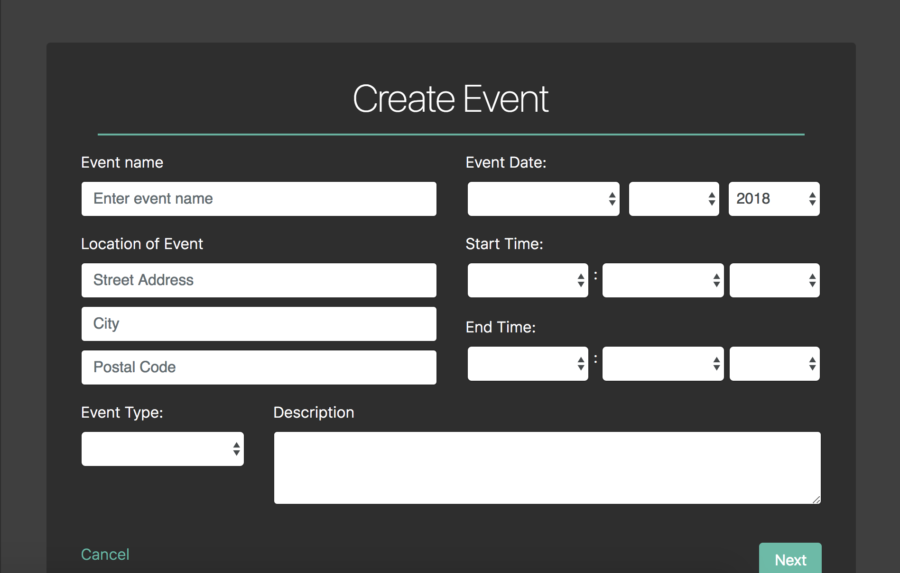
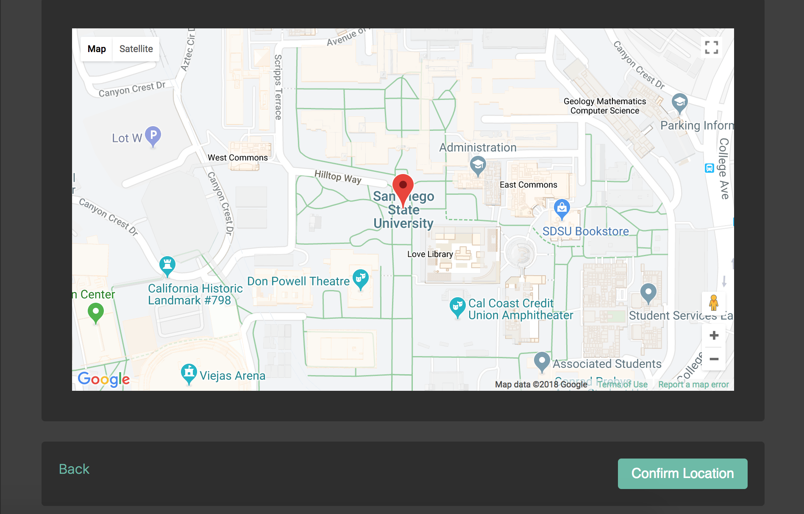
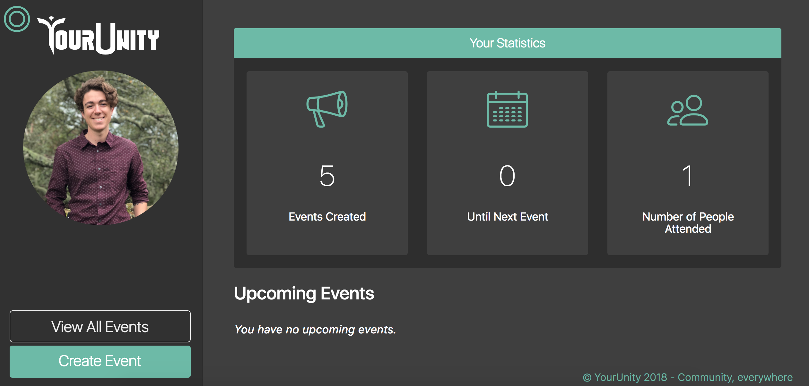
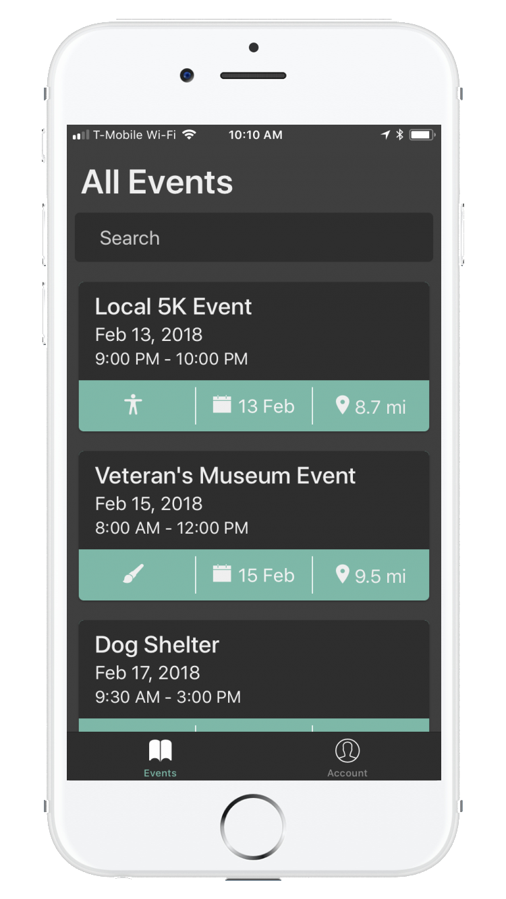
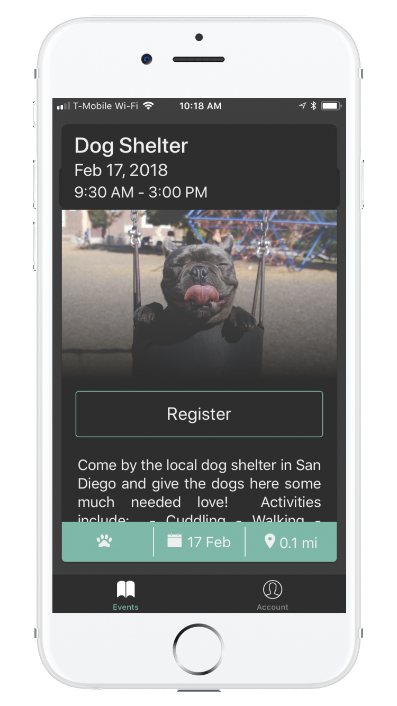
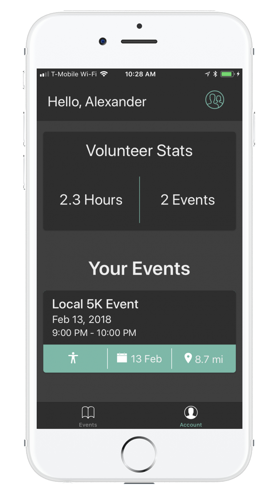

Archive / YourUnity
YourUnity
A collaborative platform for discovering local community service opportunities. Built over a year and five months by three SDSU students. A working product, later set aside after little traction from the community.
The website enabled organizations to manage and publicize their volunteer events. The mobile application (iOS and Android) let users connect with their community.

Create an event, specifying date, time, location, and description.

Refine and confirm location using the Google Maps API. GPS coordinates were allowed for unaddressed locations.

Manage and view all upcoming events. View statistics for past events.

Search events by filter.

Register for events to receive updates and waivers.

Seamlessly track volunteer hours.